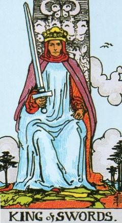
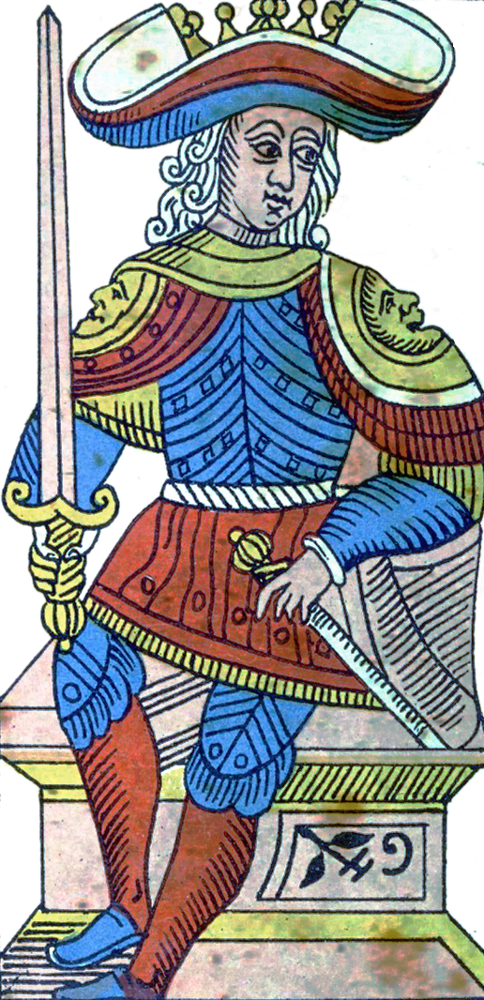
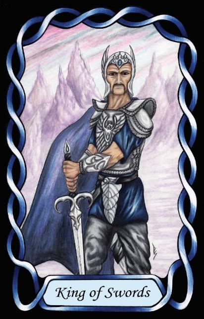

King of Swords
The Field Marshal (ENTJ – TeNi)



King |
Rational: Abstract Utilitarian |
||
Socio-political |
|||
Extroverted Thinking Introverted iNtuition |
|||
1.8% of population |
|||
Example: Harrison Ford, Steve Martin, Napoleon Bonaparte |
|||
Meaning of Life: Accomplishment |
|||
Astrology: Gemini (Male side) |
|||
Kings of Swords are directive, strategic Rationals who naturally take charge of systems, organisations, and social structures. Their extroverted thinking gives them a strong drive to organise, standardise, and bring order to the world around them. They see what needs to be done, how it should be done, and who should be doing it — and they move decisively to make it happen.
As Rationals in an Air suit, they operate in the socio-political domain. They think in terms of institutions, governance, coordination, and the efficient functioning of society. Their focus is not on personal relationships or individual needs, but on the larger system and how to align people toward a shared objective. They excel at leadership, planning, and directing collective effort.
Their introverted intuition gives them a long-range internal vision. They hold strong convictions about the future they want to build, and they pursue that vision with determination. This inner certainty allows them to cut through ambiguity and make decisions quickly, often with impressive accuracy. They are not content to react to circumstances — they shape them.
Kings of Swords influence others through clarity, structure, and authority. They communicate in a direct, organised way, laying out goals, expectations, and standards. Their leadership is purposeful and results-driven, and they expect others to rise to the level of competence and discipline they themselves embody. They are at their best when orchestrating complex systems or leading large groups toward ambitious outcomes.
At their core, they are driven by accomplishment. Their meaning in life is found in achieving goals, building systems that endure, and leaving behind a legacy of order, efficiency, and progress. They are the Field Marshals of the Rationals — decisive, visionary, and capable of reshaping the structures of society through sheer force of will and clarity of purpose.